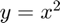
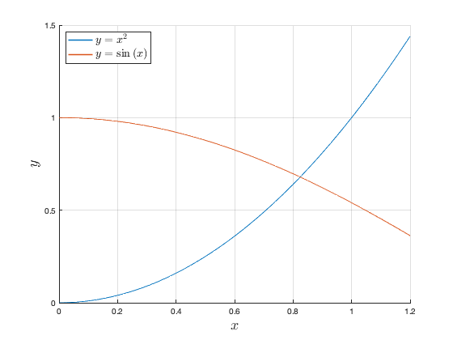

newtons_method
Newton's method for finding the root of a differentiable, univariate, scalar-valued function.
Back to Root-Finding Toolbox Contents.
Contents
Syntax
x = newtons_method(f,df,x0) x = newtons_method(f,df,x0,opts) [x,k] = newtons_method(__) [x,k,x_all] = newtons_method(__)
Description
x = newtons_method(f,df,x0) returns the root of a function specified by the function handle f, where df is the derivative of (i.e. ) and x0 is an initial guess of the root.
x = newtons_method(f,df,x0,opts) does the same as the syntax above, but allows for the specification of optional solver parameters. opts is a structure with fields detailed in the "Input/Output Parameters" section below.
[x,k] = newtons_method(...) also returns the number of iterations (k) performed of Newton's method.
[x,k,x_all] = newtons_method(...) does the same as the previous syntaxes, but also returns an array (x_all) storing the root estimates at each iteration. This syntax requires that opts.return_all be set to true.
Input/Output Parameters
| Variable | Symbol | Description | Format | |
| Input | f | univariate, scalar-valued function ( |
1×1 function_handle |
|
| df | derivative of |
1×1 function_handle |
||
| x0 | initial guess for root | 1×1 double |
||
| opts | - | (OPTIONAL) solver options with fields:
- k_max → maximum number of iterations (defaults to 200) - return_all → returns estimates at all iterations if set to true (defaults to false) - TOL → tolerance (defaults to |
1×1 struct |
|
| Output | x | root of |
1×1 double |
|
| k | number of solver iterations | 1×1 double |
||
| x_all | root estimates at all iterations | 1×(k+1) double |
Example #1: Root of a simple function.
Find the root of that is in the interval .
For Newton's method, we also need . Differentiating ,
Defining and in MATLAB,
f = @(x) x^2-1; df = @(x) 2*x;
We want a root in the interval . Therefore, we use the initial guess . Finding this root using Newton's method,
x = newtons_method(f,df,10)
x =
1
Example #2: Plot of root estimates at each iteration.
In Example #1, we found the positive root of using Newton's method. Now, produce a plot of all root estimates obtained by the newtons_method function during its solution procedure.
First, we define and in MATLAB like before.
f = @(x) x^2-1; df = @(x) 2*x;
To obtain the root estimates at all iterations, we simply need to define the opts structure, set its return_all field to true, and pass it to the newtons_method function. (Note: we use the same initial guess as in Example #1).
opts.return_all = true; [~,~,x_all] = newtons_method(f,df,10,opts);
Plotting the root estimates at each iteration,
figure; plot(x_all,'k*','MarkerSize',9,'LineWidth',1.5); grid on; xlabel('Iteration','Interpreter','latex','FontSize',18); ylabel('Root Estimate','Interpreter','latex','FontSize',18);
Example #3: Intersection of two curves.
Find the intersection of  and that is in the interval .
Defining both functions and their derivatives,
% y = x^2 and its derivative y1 = @(x) x.^2; dy1 = @(x) 2.*x; % y = cos(x) and its derivative y2 = @(x) cos(x); dy2 = @(x) -sin(x);
Let's plot both functions to see where their intersection lies.
% defines interval for plotting x = 0:0.01:1.2; % plot figure; hold on; plot(x,y1(x),'LineWidth',1.5); plot(x,y2(x),'LineWidth',1.5); hold off; grid on; xlabel('$x$','Interpreter','latex','FontSize',18); ylabel('$y$','Interpreter','latex','FontSize',18); legend('$y=x^{2}$','$y=\sin{(x)}$','Interpreter','latex','FontSize',14,... 'Location','northwest');
Finding the intersection of the two functions is equivalent to finding the root of their difference. Therefore, we can use Newton's method on with an initial guess of (picked using the plot above) to find the intersection.
x_int = newtons_method(@(x) y2(x)-y1(x),@(x) dy2(x)-dy1(x),0.8)
x_int =
0.8241
Plotting to confirm that this is the true intersection,
figure; hold on; plot(x,y1(x),'LineWidth',1.5); plot(x,y2(x),'LineWidth',1.5); plot(x_int,y1(x_int),'ko','MarkerSize',9,'LineWidth',1.5); hold off; grid on; xlabel('$x$','Interpreter','latex','FontSize',18); ylabel('$y$','Interpreter','latex','FontSize',18); legend('$y=x^{2}$','$y=\sin{(x)}$','intersection','Interpreter','latex',... 'FontSize',14,'Location','northwest');